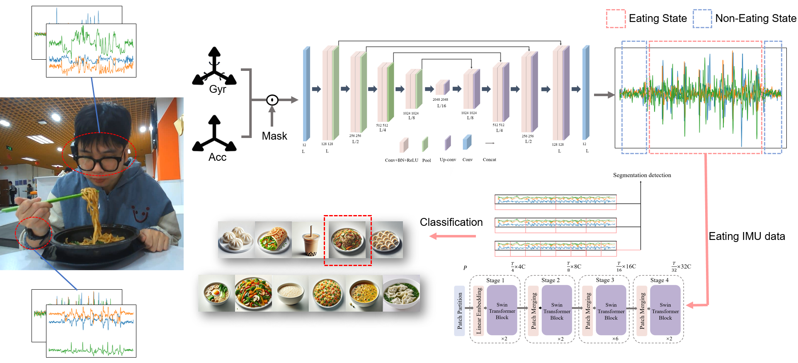
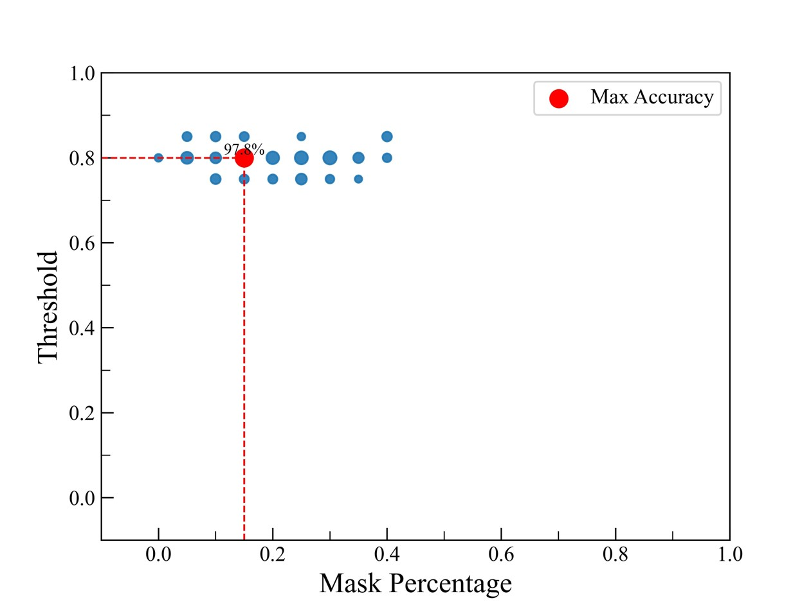
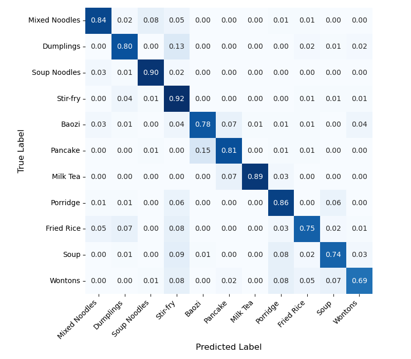

arXiv preprint arXiv:2511.05292, 2025
Publication
What's on Your Plate? Inferring Chinese Cuisine Intake from Wearable IMUs
Jiaxi Yin, Pengcheng Wang, Han Ding, Fei Wang
CuisineSense is a privacy-preserving wearable dietary sensing system that recognizes Chinese food intake from smartwatch and smart-glasses IMU signals using a two-stage eating detection and food classification pipeline.
Wearable Dietary Sensing
Xi'an Jiaotong University
Overview
Diet monitoring is useful for health management, but self-reporting is burdensome and camera-based food logging raises privacy concerns. CuisineSense takes a wearable sensing route: it uses IMUs in a smartwatch and smart glasses to infer whether a person is eating and, if so, which Chinese food category is being consumed.
The paper focuses on a practical gap in prior wearable food-intake systems. Many earlier datasets and classifiers cover a small set of Western foods, while Chinese cuisine involves diverse utensils, textures, and eating motions. CuisineSense addresses this with a two-stage pipeline that first filters non-eating activity, then performs fine-grained food classification.
Main Contributions
- Proposes a wearable Chinese cuisine intake recognition system using smartwatch and smart-glasses IMU signals.
- Uses a two-stage hierarchy: eating-state detection first, followed by 11-class Chinese food type recognition.
- Frames the first stage as reconstruction-based anomaly detection, reducing dependence on exhaustive non-eating activity collection.
- Builds a 27.5-hour dataset from 10 participants across 11 Chinese food categories and three utensil styles.
- Reports strong performance with lightweight 1D backbones: U-Net for eating detection and Swin Transformer for food classification.
Method
CuisineSense combines complementary motion cues. The smartwatch records hand movements such as chopstick, spoon, and hand-to-mouth motions at 50 Hz. The smart glasses record head and chewing-related motion at 10 Hz. Each sample contains synchronized six-axis IMU streams from both devices.
The first module, M1, detects eating states. Instead of treating the problem as ordinary binary classification, it trains a 1D U-Net to reconstruct masked eating-motion sequences. At inference time, low reconstruction error indicates an eating event, while high reconstruction error flags likely non-eating behavior. This is useful because non-eating actions are broad and difficult to enumerate completely.
The second module, M2, classifies the food type after an eating segment is detected. It uses a 1D Swin Transformer to model local and long-range temporal dependencies in the IMU sequence and outputs probabilities over 11 Chinese food categories.

Dataset
The dataset contains 27.5 hours of IMU recordings from 10 volunteers. Participants wore a Samsung Gear Sport smartwatch on the dominant hand and smart glasses with an IMU. The food set covers 11 Chinese food categories: mixed noodles, dumplings, noodle soup, stir-fry, baozi, pancake, milk tea, congee, fried rice, soup, and wontons.
The study covers three utensil patterns: chopsticks, spoon, and hand. Each participant contributed about 15 minutes per food category. The paper segments the streams into 10.24-second windows, using a 2.56-second sliding window with 50% overlap. After segmentation, the dataset includes 16,625 eating and 22,013 non-eating sequences.
Results
CuisineSense reports 97.94% accuracy for eating-state detection with the U-Net reconstruction model. A standard autoencoder baseline reaches 83.39%, showing the benefit of the masked U-Net reconstruction design for filtering non-eating activities.

For food type recognition, U-Net plus Swin Transformer reaches 88.44% accuracy, outperforming the U-Net plus ResNet variant at 80.31%. The reported inference time is 2.16 plus/minus 0.02 ms for each 10.24-second window, supporting real-time use.
| Module / Setting | Accuracy |
|---|---|
| Eating detection, autoencoder baseline | 83.39% |
| Eating detection, U-Net reconstruction | 97.94% |
| Food recognition, U-Net + ResNet | 80.31% |
| Food recognition, U-Net + Swin Transformer | 88.44% |

Ablation
The two-stage design is important. When the first-stage eating detector is removed and the food classifier's confidence threshold is used to distinguish eating from non-eating activity, the best reported accuracy across thresholds is only 52.43%. This drop shows that a dedicated intake-state detector is necessary before fine-grained food classification.
| Confidence Threshold | 0.1 | 0.2 | 0.3 | 0.4 | 0.5 | 0.6 | 0.7 | 0.8 | 0.9 |
|---|---|---|---|---|---|---|---|---|---|
| Accuracy without M1 | 45.88 | 45.88 | 45.88 | 46.07 | 45.54 | 47.76 | 49.29 | 50.61 | 52.43 |
Takeaways
CuisineSense is a clean example of privacy-preserving dietary sensing: it avoids cameras, keeps the sensing hardware realistic, and separates broad intake detection from fine-grained cuisine classification. The strongest lesson is architectural rather than heavyweight: a simple hierarchy can make wearable food logging more reliable when non-eating activities would otherwise create many false positives.
Resources
{kind=link}
{kind=link}
{kind=link}
Citation
@article{yin2025cuisinesense,
title = {What's on Your Plate? Inferring Chinese Cuisine Intake from Wearable IMUs},
author = {Yin, Jiaxi and Wang, Pengcheng and Ding, Han and Wang, Fei},
journal = {arXiv preprint arXiv:2511.05292},
year = {2025}
}